A Data Structure is a way of organizing, storing, and managing data so that operations such as searching, accessing, inserting, deleting, and updating can be performed efficiently.
Data structures are one of the foundational concepts in computer science. They are used in everything from databases, operating systems, compilers, search engines, and large-scale distributed systems.
This overview covers their classification, types, internal organization, time complexities, applications and trade-offs.
There is no single universally accepted classification of all data structures. They can be classified by their relationships, behavior, memory layout and intended operations.
Data Structures — Taxonomy
Conceptual hierarchy. Some structures belong to multiple categories.
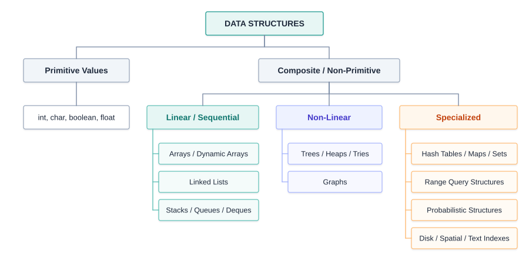
Primitive values are included for introductory classification. Strictly speaking, they are basic data types rather than composite data structures. Also, maps, sets and tries are classified by behavior as well as implementation.
Primitive vs Non-Primitive
- PrimitiveBasic individual values supported by a programming language
- Non-PrimitiveOrganizes multiple values or relationships
Linear vs Non-Linear
- LinearElements are arranged sequentially
- Non-LinearElements form hierarchical or network relationships
Static vs Dynamic
- StaticCapacity is fixed after creation; typically predictable memory usage
- DynamicCapacity can grow or shrink; memory usage can change
A dynamic array still uses a fixed-capacity backing array at any given moment. It resizes by allocating a larger array when necessary.
Contiguous vs Linked
- ContiguousElements sit side by side in one block of memory; good locality and random access
- Linked / Pointer-BasedNodes connected by references
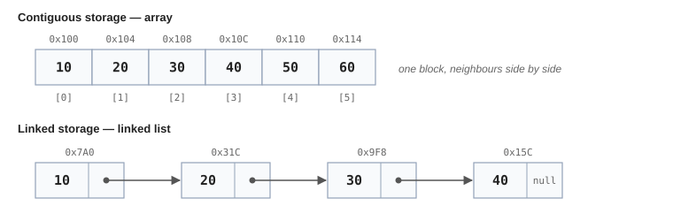
This distinction is important for performance. Arrays generally benefit from CPU caching and locality of reference, whereas linked structures can require additional memory allocations and pointer traversal.
Linear data structures arrange elements in a sequence, although their access and modification rules differ.
Array
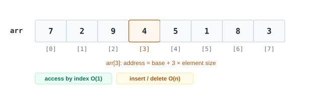
Stores a fixed number of elements, accessible by index. Offers O(1) random access but O(n) insertion or deletion when elements must be shifted.
Dynamic Array
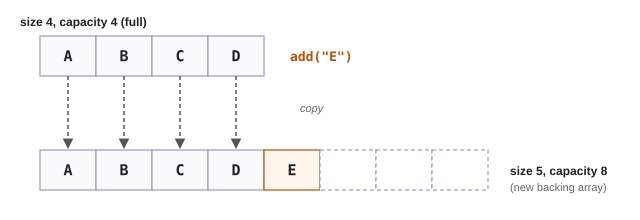
Array-backed structure that automatically grows its capacity when needed. Fast indexing and efficient appending.
Linked List
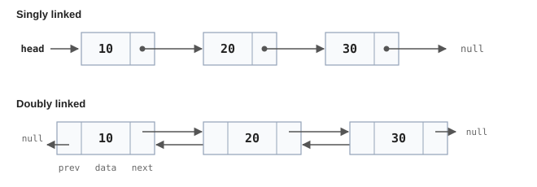
Sequence of nodes, each containing data and reference(s) to other nodes.
Variants: Singly Linked List, Doubly Linked List, Circular Linked List.
Stack
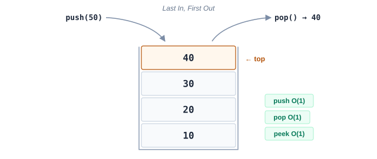
Last In, First Out. Main operations: push, pop, peek.
Used in recursion, function calls, undo systems, expression evaluation, DFS.
Queue
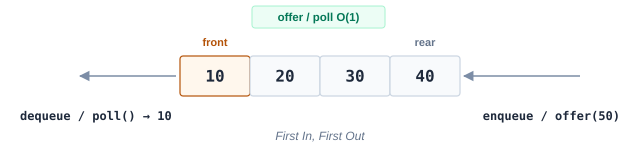
First In, First Out. Main operations: enqueue / offer, dequeue / poll.
Used in scheduling, messaging, buffering and BFS.
Deque (Double-Ended Queue)
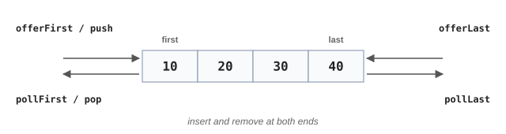
Supports insertion and deletion at both ends. Can implement both stack and queue behavior.
Used in sliding-window algorithms, buffering, work scheduling.
Other important linear structures include the Circular Buffer (Ring Buffer), used in high-performance queues and streams; Gap Buffer, used in text editing; and Rope, used for efficient manipulation of large text.
Trees
A tree organizes nodes into hierarchical parent-child relationships. A conventional rooted tree has one root and every other node has exactly one parent.
Example: Binary Tree
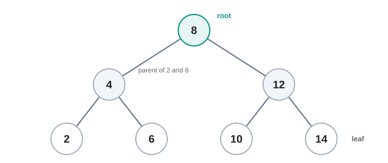
Major types of trees
| Data Structure | Characteristics | Primary Usage |
|---|---|---|
| General Tree | Each node may have any number of children | File systems, DOM |
| Binary Tree | At most two children per node | Hierarchical algorithms |
| Binary Search Tree | Left keys smaller; right keys larger | Ordered searching |
| AVL Tree | Height-balanced BST | Predictable O(log n) lookups |
| Red-Black Tree | Self-balancing BST with color invariants | Ordered maps and sets |
| Splay Tree | Recently accessed nodes move toward root | Locality-sensitive access |
| Treap | BST + heap priority properties | Randomized ordered set |
| B-Tree | Multiway balanced search tree | Database and file indexes |
| B+ Tree | Search keys in internal nodes; records at leaves | Database range queries |
| Trie (Prefix Tree) | Organizes keys by character/element prefixes | Autocomplete, routing |
| Radix Tree | Compresses common paths in a trie | Prefix indexing |
| Segment Tree | Aggregates values over ranges | Range queries and updates |
| Fenwick Tree (BIT) | Maintains prefix aggregates | Prefix/range sums |
| Interval Tree | Stores intervals for overlap queries | Scheduling, geometry |
| KD-Tree | Partitions multidimensional points | Spatial search |
| R-Tree | Organizes spatial bounding rectangles | GIS, geographic indexes |
| Merkle Tree | Parent hashes summarize descendants | Integrity checks, distributed storage |
Important distinctions:
A Binary Tree is not necessarily a BST. A BST is not necessarily balanced. AVL and Red-Black Trees are balanced BST.
A B-Tree and a Binary Tree are different families and B-Trees are particularly useful for page-oriented storage.
Heaps and Priority Queues
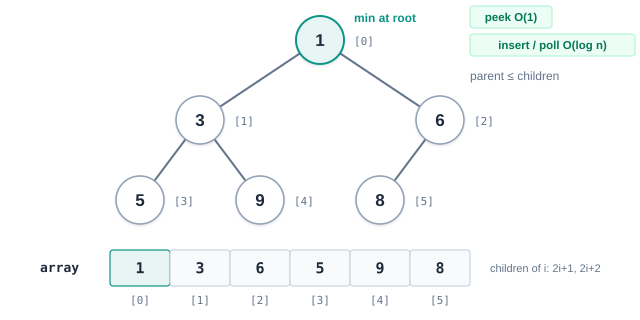
A Heap is commonly a complete binary tree satisfying a priority-ordering property.
- Min-Heap: parent ≤ children
- Max-Heap: parent ≥ children
A heap does not provide the full ordering of a BST.
Typical binary heap operations:
| Operation | Complexity |
|---|---|
| Peek highest-priority element | O(1) |
| Insert element | O(log n) |
| Remove highest-priority element | O(log n) |
| Build heap from n elements | O(n) |
A Priority Queue is an Abstract Data Type often implemented with a binary heap.
Other heap variants include Binomial Heap, Fibonacci Heap, Pairing Heap, and d-ary Heap.
Graphs
A graph consists of vertices (nodes) and edges (connections).
Unlike conventional trees, graphs can contain cycles, shared connections and multiple possible paths.
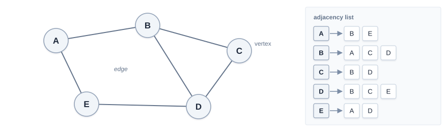
An undirected graph: vertices A–E connected by edges.
Graphs are classified along several dimensions:
| Classification | Description |
|---|---|
| Directed / Undirected | Edges have direction or do not |
| Weighted / Unweighted | Edges carry costs or weights |
| Cyclic / Acyclic | Cycles exist or are absent |
| Connected / Disconnected | Connectivity differs |
| DAG | Directed Acyclic Graph |
| Bipartite Graph | Vertices split into two disjoint groups with edges only between groups |
| Multigraph | Multiple edges can connect the same pair of vertices |
Common graph representations:
| Representation | Storage | Check if edge exists | Enumerate neighbors |
|---|---|---|---|
| Adjacency List | O(V + E) | O(degree) generally | O(degree) |
| Adjacency Matrix | O(V²) | O(1) | O(V) |
| Edge List | O(V + E) | O(E) | O(E) |
Here V means vertices, E means edges. Hash-backed adjacency lists can offer better expected edge-existence checks.
Typical applications include social networks, routing, dependency graphs, workflow engines, graph databases and recommendation systems.
These structures are selected primarily for lookup by key, membership testing, ordering or grouping.
| Structure | How it works | Use Case |
|---|---|---|
| Trie | Indexes sequences by prefixes | Prefix lookup |
| Skip List | Probabilistic layered linked structure | Ordered search |
| Hash Table | Maps keys to buckets using a hash function | Fast key-value lookup |
| Hash Map | Key → Value association, commonly hash-table-backed | User/session lookup |
| Hash Set | Maintains unique values, often hash-table-backed | Deduplication |
| Ordered Map | Maintains keys in sorted order, often with a balanced BST | Range queries |
| Ordered Set | Maintains unique sorted values | Sorted membership |
| Linked Hash Map | Combines hash lookup with linked iteration ordering | Ordered maps, LRU |
Hash Table
![Hash table as an array of linked lists: a vertical array of 6 buckets, each pointing to a linked list (chain) of key: value entries that ends in null. Bucket 0 chains ant, bat and cat; bucket 1 holds dog; bucket 2 chains eel, fox and gnu, which collided on index 2; bucket 3 chains hen, owl and yak; bucket 4 is empty; bucket 5 chains pig and ram. With 12 entries in 6 buckets the load factor is 2.0, so get and put take O(1 + load factor) on average and O(n) in the worst case. Looking up owl: hash it to bucket 3, skip hen, find owl with value 7. Side panels show the hash step (owl hashes to 1179, and 1179 % 6 = 3) and the three fields of a node: key, value and a next pointer](static/ds-hash-table.svg)
Calculates an index from a key using a hash function.
Collisions are resolved with techniques such as chaining or open addressing.
Average search, insertion and deletion are typically O(1), subject to appropriate hashing and load management.
Beyond the foundational structures, many are designed for specific query patterns or workloads.
| Family | Important Structures | Solves |
|---|---|---|
| Range Query | Fenwick Tree, Segment Tree, Sparse Table | Aggregate sums, mins, maxs over ranges |
| Disjoint Sets | Union-Find / DSU | Efficient connected-component tracking |
| String / Text | Trie, Suffix Tree, Suffix Array, Rope | Prefix search, substring search, text editing |
| Spatial | KD-Tree, QuadTree, Octree, R-Tree | Multi-dim and geographic searching |
| Probabilistic | Bloom Filter, Cuckoo Filter | Approximate membership testing |
| Frequency / Cardinality | Count-Min Sketch, HyperLogLog | Approximate frequencies and distinct counts |
| Bitmap | BitSet, Compressed Bitmap, Roaring Bitmap | Compact set operations |
| Cache-Oriented | LRU, LFU supporting structures | Eviction and access tracking |
| Immutable / Persistent | Persistent Vector, HAMT, Persistent Tree | Efficient versioned data |
| Concurrent | Concurrent Queue or Map, Lock-Free Stack | Multi-threaded access |
| External-Memory | B-Tree, B+ Tree, LSM Tree | Disk/SSD-optimized storage |
| Succinct | Rank/Select Bit Vectors, Wavelet Tree | Compact representation with query support |
Special attention: Database Data Structures
Databases rely heavily on specialized structures.
Simplified Database Indexing Architecture
![Simplified database indexing: a database query is routed by its access pattern to a suitable index, which finds the matching row IDs, and the database then fetches those rows. equality lookup such as id = 42 uses a Hash Index (hash(key) → bucket, O(1); e.g. PostgreSQL hash, Redis); range / ordered such as price BETWEEN 10 AND 20 uses a B+ Tree (sorted keys, linked leaves, O(log n); e.g. MySQL InnoDB, PostgreSQL); write-heavy such as INSERT, millions / sec uses a LSM Tree (memtable → sorted runs, merged later; e.g. RocksDB, Cassandra); full-text such as MATCH 'linked list' uses a Inverted Index (word → list of documents; e.g. Elasticsearch, Lucene); spatial query such as ST_Within(loc, area) uses a R-Tree / Spatial Index (nested bounding boxes; e.g. PostGIS (GiST)).](static/ds-db-index.svg)
These structures are particularly important for understanding how database engines handle indexes, disk I/O, write amplification, range scans, and search performance. The actual index type available depends on the database.
This is one of the most important distinctions in data structure design.
An Abstract Data Type (ADT) defines what operations are supported and what behavior they guarantee.
A concrete data structure defines how that behavior is implemented.
| ADT / Interface Concept | Possible Implementation |
|---|---|
| List | Dynamic Array, Linked List |
| Stack | Array, Linked List |
| Queue | Circular Array, Linked List |
| Deque | Circular Array, Doubly Linked List |
| Priority Queue | Binary Heap, Other Heaps |
| Map | Hash Table, Balanced Search Tree |
| Set | Hash Table, BST, Trie (for suitable keys) |
For example: a Stack promises push, pop, and peek operations with LIFO behavior, but it does not mandate an array
or linked list implementation.
Java provides a practical illustration:
This is why choosing an interface and choosing a backing data structure are separate design decisions.
The following table compares common operations for important in-memory structures.
n = number of elements; L = length of a key; α(n) = inverse Ackermann function. Average-case assumptions are noted.
| Data Structure | Access / Search | Insert | Delete |
|---|---|---|---|
| Array | Index O(1), search O(n) | O(n) shifting | O(n) shifting |
| Dynamic Array | Index O(1), search O(n) | Append O(1) amortized; middle O(n) | Middle O(n) |
| Singly Linked List | O(n) search | Head O(1) | O(1) with predecessor; else O(n) |
| Doubly Linked List | O(n) search | O(1) at known position | O(1) at known node |
| Stack | Top O(1) | Push O(1)* | Pop O(1)* |
| Queue / Deque | Ends O(1) | O(1)* | O(1)* |
| Hash Table | O(1) expected | O(1) expected | O(1) expected |
| Unbalanced BST | O(n) worst | O(n) worst | O(n) worst |
| AVL / Red-Black Tree | O(log n) | O(log n) | O(log n) |
| Binary Heap | Root O(1); search O(n) | O(log n) | Root O(log n) |
| Trie | O(L) | O(L) | O(L) |
| Union-Find | Find O(α(n)) amortized | Union O(α(n)) amortized | Not generally supported |
*For suitable implementations, O(1) may be amortized rather than worst-case, due to resizing or other implementation costs. Hash-table performance assumes reasonably distributed hashes; pathological cases can degrade significantly.
Understanding Big-O
| Complexity | Meaning | Example |
|---|---|---|
| O(1) | Constant time | Array index access |
| O(log n) | Logarithmic | Balanced BST search |
| O(n) | Linear | Search in unsorted array |
| O(n log n) | Linearithmic | Merge Sort |
| O(n²) | Quadratic | Nested pair comparisons |
| O(2ⁿ) | Exponential | Brute-force subset enumeration |
Growth of common time complexities
Illustrative operation counts as input size grows. Logarithms use base 2.
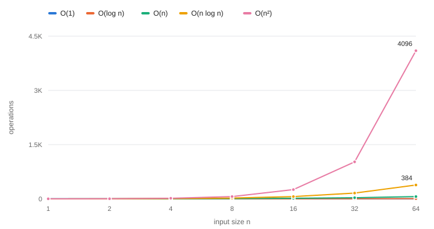
Big-O describes asymptotic growth, not exact execution time. Memory layout, CPU cache locality, object allocation, garbage collection, concurrency and I/O can make an O(n) operation faster than an O(log n) operation for small inputs.
Choosing a structure means understanding the workload, not simply choosing the one with the fastest advertised
Big-O complexity.
| Requirement | Common Choice | Reason |
|---|---|---|
| Fast access by index | Array / ArrayList | O(1) indexing |
| Frequently append items | ArrayList | Amortized O(1) append |
| Insert/remove at both ends | ArrayDeque | Efficient deque operations |
| LIFO processing | Stack using ArrayDeque | Efficient push/pop |
| FIFO processing | Queue using ArrayDeque | Efficient enqueue/dequeue |
| Lookup by unique key | HashMap | Expected O(1) |
| Test membership | HashSet | Expected O(1) |
| Maintain sorted keys | TreeMap / TreeSet | O(log n) ordered operations |
| Get minimum or maximum repeatedly | PriorityQueue | Heap-based prioritization |
| Find words by prefix | Trie | Prefix-oriented lookup |
| Maintain ranges with updates | Segment Tree / Fenwick Tree | Efficient aggregate operations |
| Connectivity tracking | Union-Find | Near-constant amortized operations |
| Traverse relationships | Graph adjacency list | Efficient sparse graph storage |
| Database range indexing | B+ Tree | Page-friendly ordered index |
| Approximate membership with small memory | Bloom Filter | Memory-efficient prefiltering |
| Multi-threaded key-value access | ConcurrentHashMap | Concurrent operations |
Five questions to ask before choosing
- Access pattern: Do I need index access, key lookup, sorted traversal or range queries.
- Mutation pattern: Is the workload read-heavy, write-heavy, append-only or frequently changing.
- Scale: How many elements are involved and what is the memory budget.
- Ordering: Must insertion order, sorted order or priority order be maintained.
- Environment: Does the structure need to work on disk, across threads or across distributed nodes.
| Real-World System | Common Data Structures | Why They Are Used |
|---|---|---|
| Java applications | ArrayList, HashMap, HashSet | General collection management |
| Operating systems | Queues, Trees, Bitmaps | Scheduling and resource management |
| Database engines | B+ Tree, Hash Index, LSM Tree | Indexing and storage |
| Redis | Hash Tables, Lists, Skip Lists, Sets, Streams | In-memory data operations |
| Kafka-like message systems | Logs, Indexes, Buffers, Queues | Message storage and delivery |
| Search engines | Inverted Index, Trie, FST | Fast text retrieval |
| Compilers | AST, Stack, Symbol Table, Graph | Parsing and semantic processing |
| Networking | Trie, Radix Tree, Queues | Routing and packet handling |
| Geographic systems | R-Tree, KD-Tree, QuadTree | Spatial queries |
| AI / ML | Arrays, Tensors, Graphs, KD-Trees | Numeric and nearest-neighbor computation |
| Distributed systems | Hash Rings, Merkle Trees, Bloom Filters | Placement, verification and filtering |
| Caching | HashMap, Doubly Linked List, Heaps | Lookup and eviction |
For instance, a typical LRU Cache can combine a HashMap and Doubly Linked List to obtain O(1) expected access and eviction operations. This demonstrates that a practical system often combines multiple structures.
Several considerations determine whether a structure is appropriate in production systems.
| Property | Explanation |
|---|---|
| Memory overhead | Extra node references, metadata, and unused capacity |
| Cache locality | Whether nearby elements are accessed efficiently by the CPU |
| Allocation pressure | Number of heap allocations and effects on GC |
| Ordering guarantees | Sorted, insertion-ordered, or unordered iteration |
| Thread safety | Whether concurrent operations are safe |
| Mutability | Whether elements or structure can change |
| Persistence | Whether older versions remain accessible after updates |
| Serialization | How efficiently data can be transferred or persisted |
| Disk locality | Number of storage pages or I/O operations required |
| Exact vs Approximate | Whether a query returns precise or probabilistic results |
Java’s standard collections APIs provide implementations of many common ADTs and data structures.
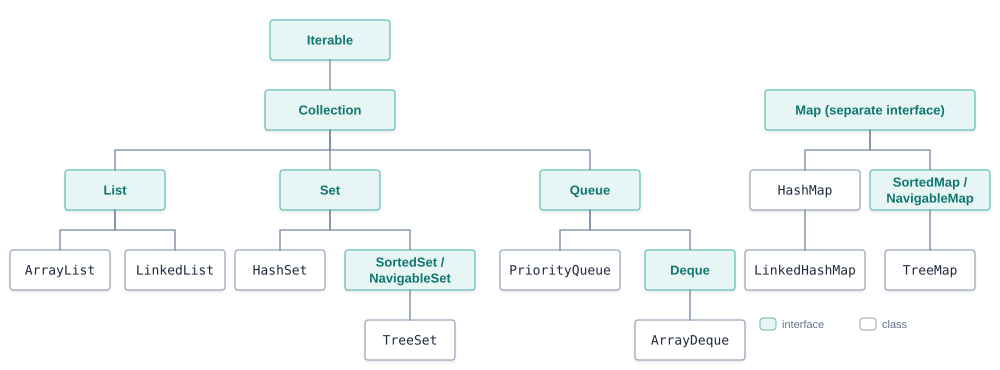
The entire field becomes easier to navigate by grouping data structures according to the main problem they solve.
| Main Problem | Data Structure Family |
|---|---|
| Store a sequence | Array, List, Linked List |
| Control processing order | Stack, Queue, Deque |
| Quickly locate data | Hash Table, Map, Set |
| Maintain sorted order | BST, AVL, Red-Black Tree, Skip List |
| Repeatedly obtain the highest priority | Heap, Priority Queue |
| Represent hierarchy | Tree |
| Represent relationships | Graph |
| Search prefixes and patterns | Trie, Suffix Structures |
| Compute range aggregates | Segment Tree, Fenwick Tree |
| Manage connectivity | Union-Find |
| Index data on storage devices | B-Tree, B+ Tree, LSM Tree |
| Represent large sets compactly | Bitmaps, Bloom Filters, Sketches |
| Support geographic queries | KD-Tree, R-Tree, QuadTree |
| Support concurrent access | Concurrent Maps, Queues, Lock-Free Structures |
| Preserve historical versions | Persistent Data Structures |
There is no universally best data structure. Every structure is an engineering trade-off between time complexity, memory complexity, access patterns, update patterns, ordering guarantees and implementation complexity.
Understanding those trade-offs—and how fundamental structures are combined—is what connects data structures
to real-world software architecture and system design.